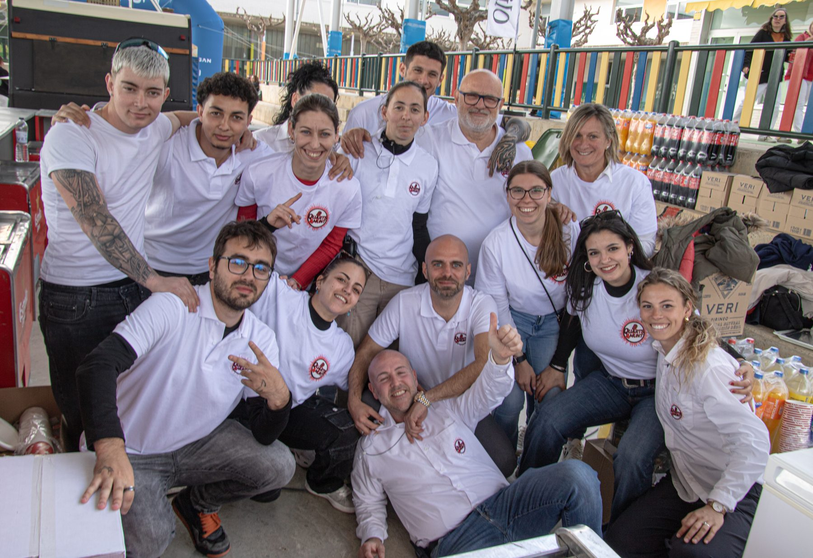

Un grup de gent que dedica els dijous —i uns quants caps de setmana— a que això funcioni.
Alguns els sentireu cada dijous a l'antena; d'altres no hi surten mai, però sense ells no hi hauria ni programa ni diades.
Fundador de Quarts Amunt i conductor del programa. La veu i l'energia del projecte.
Fundador del projecte i adjunt a direcció. Segona veu del programa.
Imatge de marca, comunicació digital, creació de contingut i estratègia per fer créixer la comunitat.
Encarregada de les relacions amb ajuntaments, colles i entitats.
Gestiona les comandes i tot el que té a veure amb el marxandatge del projecte.
Gestiona les comandes i tot el que té a veure amb el marxandatge del projecte.
Encarregat dels patrocinis i de la relació amb les empreses que fan possible el projecte.
Responsable de producció. Munta i fa funcionar els esdeveniments.
Responsable de producció. Munta i fa funcionar els esdeveniments.
A cada diada s'hi suma gent que ve a ajudar de manera voluntària. Sense ells no en sortiríem.

Part de l'equip amb els voluntaris que van venir a donar un cop de mà.